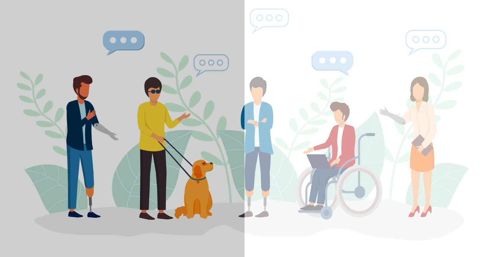

When websites and web tools are properly designed and coded, people with disabilities can use them. However, when web developers are not aware of how they can make their websites and tools accessible, there may be barriers that make websites difficult or impossible for some people to use. There are many types of web accessibility, such as motor accessibility, visual accessibility, and audio accessibility. Explore our website to learn more.
Being more accessible.
Learn how in web dev.
